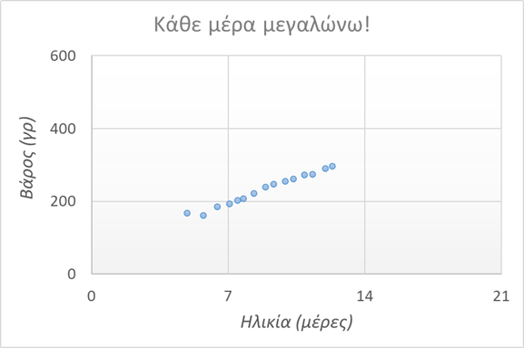

Ένα υγιέστατο γατάκι, πιθανότατα αρσενικό. Το βρήκαμε μόνο του στον δρόμο, χωρίς αδερφάκια, έξω από το Πανεπιστήμιο, παρατημένο και ανήμπορο. Το πιο πιθανό, να πέθανε η μαμά του.. Παρά το κρύο και τον κίνδυνο έκθεσης, το γατάκι επέζησε, τον πήγαμε κτηνίατρο για πλήρη έλεγχο και παρακολούθηση και τα πάει εξαιρετικά!
Τρώει με πολλή όρεξη, είναι χαδιάρης, πανέξυπνος και λίγο λαίμαργος! Μέσα σε λίγες ημέρες πήρε ιδανικό βάρος, έχει ρουτίνα φαγητού-τουαλέτας και κάθε μέρα δυναμώνει! Μόλις άνοιξαν και τα ματάκια του. Αγαπάει το κουβερτάκι του και την ζέστη, σαν μπέμπης που είναι τώρα! Τρώει αποκλειστικά υποκατάστατο μητρικό γάλα σε σκόνη, μέχρι να γίνει 1 μηνών.
Ιδανικά θα θέλαμε να παραμείνει μέσα σε σπίτι, είτε να πάει σε σπίτι με δίκη του προστατευμένη αυλή.
Το κυριότερο όμως: υπεύθυνοι άνθρωποι και οικογένειες που να το αγαπάνε αληθινά και να το φροντίζουν!!
Μπορεί να δοθεί άμεσα ή αφού απογαλακτιστεί πλήρως (δλδ. μέσα με τέλη Μαΐου). Η διαδικασία ταΐσματος είναι πανεύκολη και γρήγορη, έχει γίνει παιχνιδάκι.


Το τρώω το φαγητό μου! Και...

Latest update: April 24